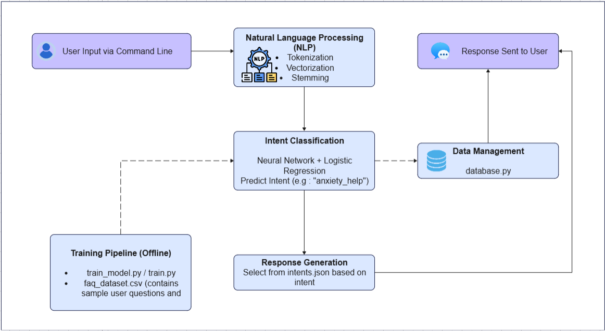
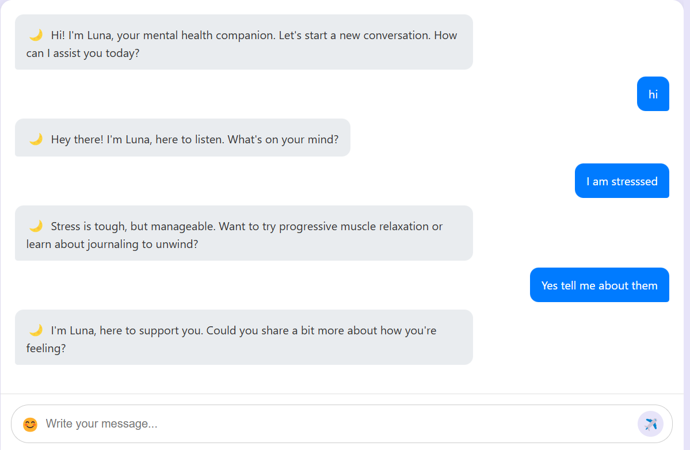
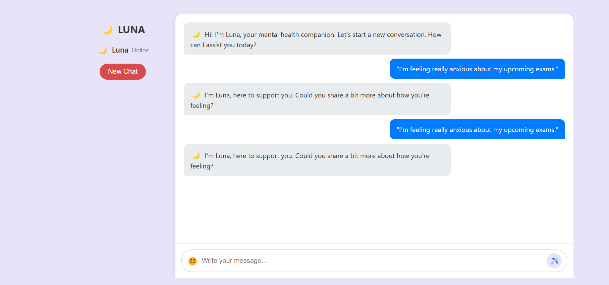
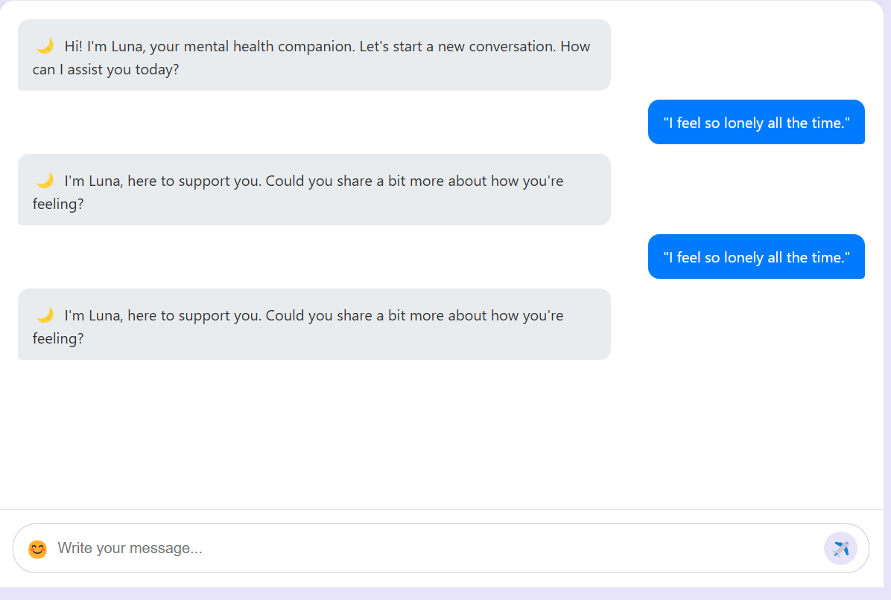
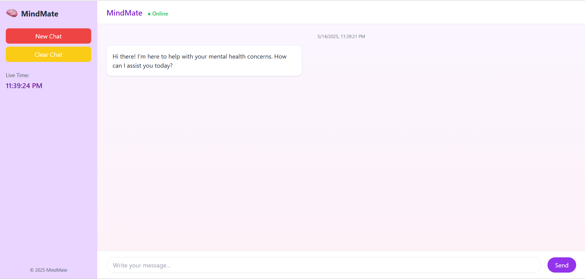
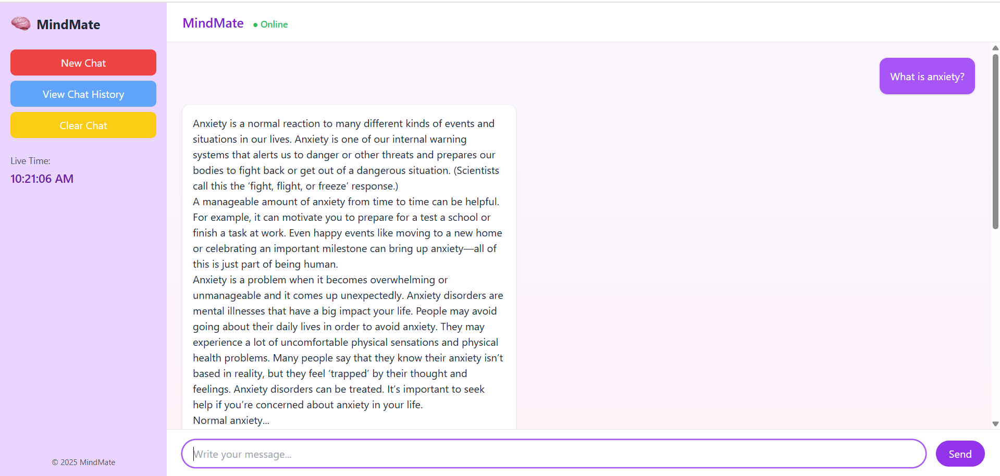
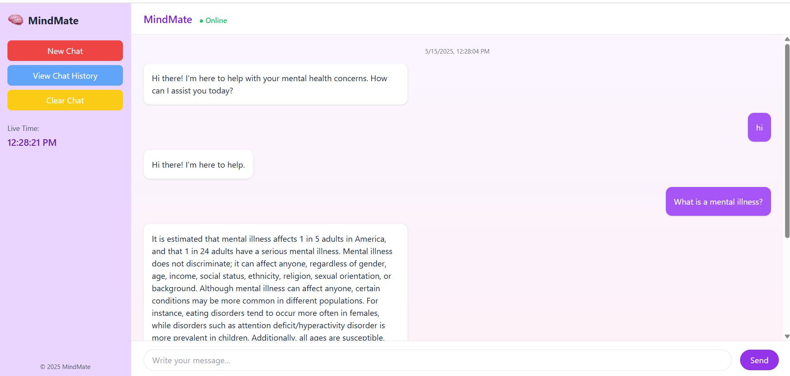
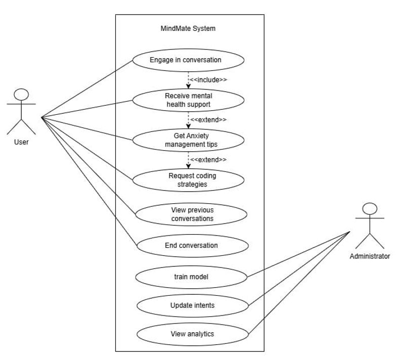
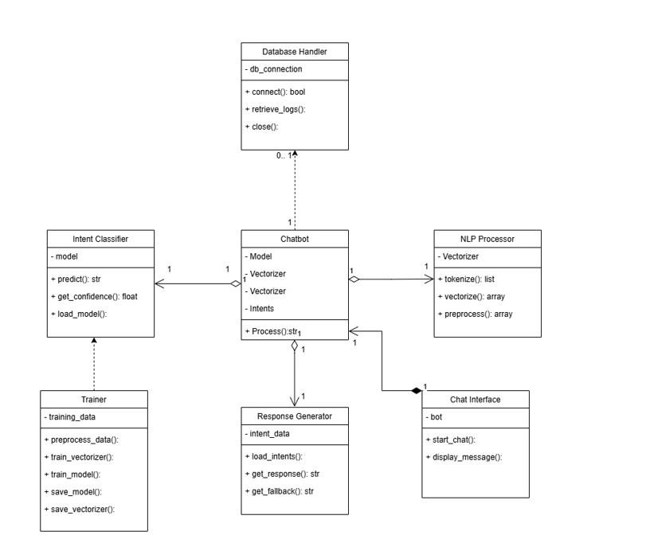

AI Mental Health Chatbot
NLP chatbot intent classification, knowledge base, team-built
AI Mental Health Chatbot
Overview
A conversational AI chatbot designed to provide mental wellness guidance through natural language processing and knowledge-based reasoning. The system combines a user-friendly chat interface with an intelligent inference engine and comprehensive knowledge base.
Project type
Team project · NLP + knowledge base · 2025
My Role
Part of an Agile team building the chatbot: contributed design, NLP intent construction, knowledge base curation, and technical documentation.
Key outcomes
- Multi-intent NLP pipeline with Streamlit chat UI
- Curated wellness knowledge base with supportive guidance
- System architecture and technical documentation
- Collaborative team implementation across analysis, design, and development
Architecture & Design
- Streamlit chat interface, intent classifier, knowledge-base retrieval, and response generator
- NLP pipeline: tokenization, intent classification, and response selection
- Knowledge base design for psychoeducational wellness content
Architecture Diagram

Challenges & Improvements
- Knowledge quality – expanding evidence-based, therapist-reviewed content and citation sources.
- Scaling – moving from rule/NLP hybrid to an evaluated vector-search retrieval layer and multi-turn memory.
Project Screenshots
Luna (early prototype) and MindMate (Streamlit) interfaces plus architecture, use case, and class diagrams.








Team Contribution
Contributed to system analysis, architectural design, implementation, and technical documentation as part of a collaborative team project.